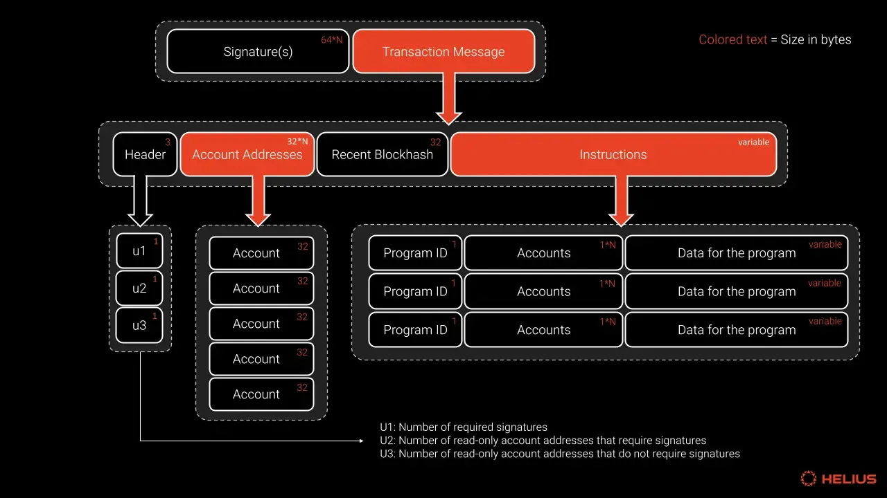

솔라나 계정 모델
솔라나 계정이란?
솔라나 데이터 모델의 기초
솔라나에서는 모든 데이터가 "계정(accounts)"이라고 불리는 곳에 저장됩니다. 솔라나의 데이터를 단일 "계정" 테이블이 있는 공개 데이터베이스로 생각할 수 있으며, 이 테이블의 각 항목이 "계정"입니다. 모든 솔라나 계정은 동일한 기본 계정 타입을 공유합니다.
핵심 속성
- 데이터 저장: 최대 10MiB 데이터 저장 가능 (실행 코드 또는 프로그램 상태)
- 임대료 요구사항: 저장된 데이터에 비례하는 램포트 보증금 필요
- 프로그램 소유권: 모든 계정은 지정된 프로그램 소유자를 가짐
- 권한 모델: 소유자 프로그램만 데이터 수정 또는 잔액 차감 가능
계정 분류
- 시스템 계정: 네트워크 클러스터 상태 정보 저장
- 프로그램 계정: 스마트 컨트랙트의 실행 코드 저장
- 데이터 계정: 프로그램이 상태를 저장하고 관리하기 위해 생성
- Sysvar 계정: 네트워크 클러스터 상태를 가진 특수 계정
계정 주소 체계와 구조
고유 식별 시스템
솔라나의 모든 계정은 고유한 32바이트 주소를 가지며, 이는 보통 base58 인코딩된 문자열로 표시됩니다 (예: 14grJpemFaf88c8tiVb77W7TYg2W3ir6pfkKz3YjhhZ5).
🟣 Ed25519 공개키
- 가장 일반적인 계정 주소 유형
- 암호화 키 쌍에서 생성
- 지갑 계정과 사용자 제어 계정에 사용
- 공개키에서 파생된 32바이트 주소
🟢 PDA (Program Derived Address)
- 개인키가 없는 특수 주소
- 프로그램 ID + 시드에서 결정론적으로 파생
- 프로그램이 계정을 소유할 수 있게 함
- 프로그램 간 호출에 필수적
// 예시: Ed25519 키 쌍 생성
use solana_sdk::signer::{keypair::Keypair, Signer};
let keypair = Keypair::new();
println!("공개키: {}", keypair.pubkey());
println!("개인키: {:?}", keypair.to_bytes());
기본 계정 타입 구조
범용 계정 필드
계정의 최대 크기는 10MiB이며, 솔라나의 모든 계정은 5개의 필수 필드를 가진 동일한 기본 계정 타입을 공유합니다.
pub struct Account {
/// 계정의 램포트 잔액
pub lamports: u64,
/// 이 계정에 저장된 데이터
pub data: Vec<u8>,
/// 이 계정을 소유하는 프로그램
pub owner: Pubkey,
/// 이 계정의 데이터가 실행 가능한 프로그램인지 여부
pub executable: bool,
/// 이 계정이 다음 임대료를 지불해야 하는 에포크 (더 이상 사용되지 않음)
pub rent_epoch: Epoch,
}
1
Lamports 필드
램포트 단위의 계정 잔액 (SOL의 최소 단위: 1 SOL = 10억 램포트). 계정의 SOL 잔액을 나타내며 데이터 저장에 필요한 최소 임대료 보증금을 포함합니다.
2
Data 필드
임의의 데이터를 저장하는 바이트 배열. 프로그램 계정의 경우 실행 코드를 포함하고, 데이터 계정의 경우 소유 프로그램이 정의한 상태 정보를 저장합니다.
3
Owner 필드
이 계정을 소유하는 프로그램의 ID (공개키). 소유자 프로그램만이 계정 데이터를 수정하거나 램포트 잔액을 차감할 수 있습니다.
4
Executable 필드
계정이 실행 가능한 프로그램 코드를 포함하는지를 나타내는 불린 값. 프로그램 계정은 true, 상태를 저장하는 데이터 계정은 false입니다.
시스템 프로그램과 계정 생성
계정 관리의 기반
기본적으로 프로그램이 아닌 계정은 시스템 프로그램이 소유합니다. 시스템 프로그램은 계정 생명주기 관리에 중요한 기능을 수행하며, 솔라나에서 새 계정을 생성할 수 있는 유일한 프로그램입니다.
시스템 프로그램 기능
- 새 계정 생성: 계정을 생성할 수 있는 유일한 프로그램
- 공간 할당: 계정 데이터 필드의 바이트 용량 설정
- 소유권 할당: 다른 프로그램으로 소유권 이전 가능
- SOL 전송: 계정 간 램포트 전송
시스템 프로그램 주소: 11111111111111111111111111111111
새 주소로 SOL이 처음 전송되면, 해당 주소에 시스템 프로그램이 소유하는 계정이 자동으로 생성됩니다.
프로그램 계정과 로더
실행 코드 저장
솔라나 프로그램을 배포하면 프로그램 코드를 저장하는 실행 가능한 프로그램 계정이 생성됩니다. 프로그램 계정은 System Program이 생성하여 소유권을 BPFLoader에게 넘겨줍니다. 로더 프로그램은 실행 가능한 프로그램 계정을 로드하고 관리하는 역할을 하는 내장 프로그램 역할을 합니다.
owner: BPFLoader2111111111111111111111111111111111,
데이터 계정과 상태 관리
프로그램 상태 저장
솔라나에서는 실행 코드와 프로그램 상태가 별도로 저장됩니다. 프로그램은 자신이 소유하는 데이터 계정을 생성하는 명령어를 정의하며, 각 계정은 고유한 주소를 가지고 프로그램이 정의한 임의의 데이터를 저장할 수 있습니다.
1
계정 생성 요청
커스텀 프로그램이 시스템 프로그램에 지정된 크기와 임대료 보증금으로 새 계정 생성을 요청합니다.
2
시스템 프로그램이 계정 생성
시스템 프로그램이 계정을 생성하고 초기에 소유하며, 데이터 필드에 요청된 공간을 할당합니다.
3
소유권 이전
시스템 프로그램이 새로 생성된 계정의 소유권을 요청한 커스텀 프로그램으로 이전합니다.
4
데이터 초기화
이제 소유자가 된 커스텀 프로그램이 정의된 구조와 로직에 따라 계정 데이터를 초기화합니다.
핵심 원칙: 시스템 프로그램만이 새 계정을 생성할 수 있습니다. 생성 후 소유권을 커스텀 프로그램으로 이전할 수 있으며, 이후 해당 프로그램이 자신의 프로그램 로직에 따라 계정의 데이터와 상태를 관리합니다.
Sysvar 계정
네트워크 클러스터 상태 접근
Sysvar 계정은 클러스터 상태 데이터에 대한 접근을 제공하는 미리 정의된 주소의 특수 계정입니다. 이러한 계정은 네트워크 클러스터에 대한 정보로 동적으로 업데이트되며 모든 프로그램에서 사용할 수 있습니다.
rent와 저장소
계정 저장소 비용 모델
온체인에 데이터를 저장하려면 계정은 저장된 데이터 양에 비례하는 램포트(SOL) 잔액을 유지해야 합니다. 이 잔액을 "임대료"라고 하지만, 회수 가능한 보증금처럼 작동합니다.
개발자 고려사항
- 데이터 최적화: 임대료 비용을 줄이기 위해 데이터 최적화
- 계정 재사용: 가능한 경우 계정 재사용
- 생명주기 계획: 계정 생성 및 닫기 계획
- 비용 계산: 임대료 계산기를 사용하여 비용 예측
Transaction과 Instruction

네트워크와 상호작용
솔라나에서 사용자는 네트워크와 상호작용하기 위해 Transaction을 전송합니다. Transaction은 처리할 작업을 지정하는 하나 이상의 Instruction을 포함합니다. Instruction의 실행 로직은 솔라나 네트워크에 배포된 프로그램에 저장되며, 각 프로그램은 자체 Instruction 집합을 정의합니다.
Transaction 핵심 특징
- 다중 Instruction: 하나의 Transaction에 여러 Instruction 포함 가능
- 실행 순서: Instruction은 Transaction에 추가된 순서대로 실행
- 원자성: 모든 Instruction이 성공해야 하며, 하나라도 실패하면 전체 Transaction 실패
- 프로그램 호출: 네트워크의 프로그램을 호출하는 Instruction 포함
Instruction 필수 정보
- 프로그램 주소: 호출할 프로그램의 주소
- 계정 목록: Instruction이 읽거나 쓸 계정들
- 추가 데이터: Instruction에 필요한 추가 데이터 (함수 인수 등)
- 권한 정보: 계정의 서명자 및 쓰기 가능 여부
비유: Transaction은 양식이 들어있는 봉투로 생각할 수 있습니다. 각 양식은 네트워크에 무엇을 할지 알려주는 Instruction입니다. Transaction을 보내는 것은 양식을 처리하기 위해 봉투를 우편으로 보내는 것과 같습니다.
이더리움은 하나의 계정에 State + Program 둘 다 있는데 솔라나는 두개의 계정으로 나눈다 왜??
--> 최대한 잘게 쪼개서 병렬 처리성을 높일 수 있다. Read Write를 구분도 가능
성능을 높이려면 불편을 감수해야하는데
SOL 전송 예제
시스템 프로그램 호출
아래 다이어그램은 발신자에서 수신자로 SOL을 전송하는 단일 Instruction이 있는 Transaction을 나타냅니다. 솔라나에서 "지갑"은 시스템 프로그램이 소유하는 계정입니다. 프로그램 소유자만 계정의 데이터를 변경할 수 있으므로, SOL 전송에는 시스템 프로그램을 호출하는 Transaction 전송이 필요합니다.
1
Transaction 서명
발신자 계정이 Transaction에 서명(is_signer)하여 시스템 프로그램이 자신의 램포트 잔액을 차감할 수 있도록 허용합니다.
2
계정 권한 설정
발신자와 수신자 계정은 모두 램포트 잔액이 변경되므로 쓰기 가능(is_writable)해야 합니다.
3
시스템 프로그램 처리
Transaction 전송 후, 시스템 프로그램이 전송 Instruction을 처리하고 발신자와 수신자 계정의 램포트 잔액을 업데이트합니다.
AccountMeta
계정 메타데이터와 권한
명령어를 생성할 때 필요한 각 계정을 AccountMeta로 제공해야 합니다. AccountMeta는 계정의 공개키, 서명 필요 여부, 쓰기 가능 여부를 지정합니다.
1
pubkey
계정의 주소를 나타내는 공개키입니다.
2
is_signer
계정이 트랜잭션에 서명해야 하는지를 나타냅니다. true인 경우 해당 계정의 개인키로 트랜잭션에 서명해야 합니다.
3
is_writable
명령어가 계정의 데이터를 수정하는지를 나타냅니다. true인 경우 계정의 데이터나 메타데이터가 변경될 수 있습니다.
병렬 실행의 핵심
- 사전 명시: 명령어가 읽거나 쓸 계정을 미리 지정
- 계정 충돌 방지: 동일한 계정을 수정하지 않는 트랜잭션들은 병렬 실행
- 성능 향상: 솔라나의 높은 TPS를 가능하게 하는 핵심 메커니즘
- 예측 가능성: 실행 전에 어떤 계정이 영향받을지 알 수 있음
개발자 편의성
- 클라이언트 라이브러리: 대부분의 프로그램이 헬퍼 함수 제공
- 자동 생성: 명령어를 수동으로 구성할 필요 없음
- 타입 안전성: 잘못된 계정 구성을 컴파일 시점에 방지
- 문서화: 프로그램 구현을 참조하여 필요한 계정 확인
실제 사용: 실제로는 명령어를 수동으로 구성할 필요가 거의 없습니다. 대부분의 프로그램 개발자는 명령어를 생성해주는 헬퍼 함수가 있는 클라이언트 라이브러리를 제공합니다. 어떤 계정이 필요한지, 어떤 계정이 쓰기 가능하거나 읽기 전용이어야 하는지, 또는 트랜잭션에 서명해야 하는지를 알려면 프로그램에서 정의한 명령어의 구현을 참조해야 합니다.
Program Derived Address (PDA)
결정론적 주소 생성과 프로그램 서명
Program Derived Address (PDA)는 솔라나 개발에서 두 가지 주요 용도로 사용되는 기능입니다: 결정론적 계정 주소 생성과 프로그램 서명 활성화입니다.
PDA의 핵심 특징
- 결정론적 생성: 선택적 시드와 프로그램 ID 조합으로 항상 동일한 주소 생성
- 해시맵 구조: 미리 정의된 입력(문자열, 숫자, 계정 주소)으로 온체인 해시맵 생성
- 주소 추적 불필요: 정확한 주소 기억 대신 파생에 사용된 입력만 기억하면 됨
- 프로그램 서명: 솔라나 런타임이 프로그램을 대신해 PDA에 서명 가능
PDA 파생 과정
3가지 입력으로 주소 생성
PDA 파생에는 세 가지 입력이 필요합니다:
1
선택적 시드 (Optional Seeds)
PDA 파생을 위한 미리 정의된 입력들 (문자열, 숫자, 다른 계정 주소 등). 이 시드들은 바이트로 변환되어 사용됩니다.
2
Bump 시드
유효한 PDA(곡선 밖)가 생성되도록 보장하기 위해 선택적 시드에 추가되는 추가 바이트입니다. 255에서 시작하여 유효한 PDA를 찾을 때까지 1씩 감소합니다.
3
프로그램 ID
PDA가 파생되는 프로그램의 주소입니다. 이 프로그램이 PDA를 대신하여 서명할 수 있습니다.
장점 : 1. 주소 기억 불필요 ex) 참가자 1번의 데이터가 있는 주소 위치 = PDA로 알아낼 수 있다.
2. 프라이빗 키 기억할 필요 없다. ownership을 프로그램에 종속시켜 키관리 불필요.
Solana 개발 흐름
Rust와 Anchor 프레임워크
Solana 개발은 주로 Rust 언어와 Anchor 프레임워크를 사용하여 이루어집니다. 이는 고성능과 안전성을 보장하면서도 개발 효율성을 높여줍니다.
1
개발 환경 설정
Rust 설치 후 Anchor 프레임워크를 설정합니다. Anchor는 이더리움의 Truffle/Hardhat/Foundry와 같은 역할을 하며 개발 과정을 간소화해줍니다.
2
프로그램 작성
Rust로 함수들을 작성하고 필요한 상태(Struct)를 정의합니다. 각 함수가 어떤 계정에 읽기/쓰기 접근을 하는지 명시해야 합니다.
3
빌드 및 컴파일
작성한 프로그램을 BPF 바이트코드로 컴파일합니다. Anchor CLI가 이 과정을 자동화해줍니다.
4
클러스터 배포
컴파일된 프로그램을 솔라나 클러스터에 배포합니다. 성공하면 프로그램 주소(Program ID)가 발급됩니다.
5
계정 생성 및 초기화
프로그램이 사용할 계정들을 생성하고 초기 데이터를 설정합니다 (토큰 발행량, NFT 메타데이터 등).
Anchor 프레임워크 배우기
솔라나 프로그램 개발을 위한 고급 도구
Anchor는 솔라나 프로그램 개발을 위한 프레임워크로, Rust 매크로를 사용하여 보일러플레이트 코드를 줄이고 솔라나 프로그램 작성에 필요한 일반적인 보안 검사를 단순화합니다.
주요 매크로
- declare_id!: 프로그램의 온체인 주소 지정
- #[program]: 명령어 로직을 포함하는 모듈 지정
- #[derive(Accounts)]: 명령어 필요 계정 목록 정의
- #[account]: 프로그램용 커스텀 계정 타입 생성
프로그램 구조와 주요 매크로
Anchor 프로그램의 기본 구조
Anchor 프로그램에서 발견되는 주요 매크로들을 실제 예제를 통해 살펴보겠습니다:
use anchor_lang::prelude::*;
// 1. 프로그램 ID 선언
declare_id!("11111111111111111111111111111111");
// 2. 프로그램 모듈과 명령어 핸들러
#[program]
mod hello_anchor {
use super::*;
pub fn initialize(ctx: Context<Initialize>, data: u64) -> Result<()> {
ctx.accounts.new_account.data = data;
msg!("Changed data to: {}!", data);
Ok(())
}
}
// 3. 계정 구조체 정의 (명령어에 필요한 계정들)
#[derive(Accounts)]
pub struct Initialize<'info> {
#[account(init, payer = signer, space = 8 + 8)]
pub new_account: Account<'info, NewAccount>,
#[account(mut)]
pub signer: Signer<'info>,
pub system_program: Program<'info, System>,
}
// 4. 커스텀 계정 타입 정의
#[account]
pub struct NewAccount {
data: u64,
}
예제 설명: 위 프로그램은 새 계정(NewAccount)을 생성하고 u64 값으로 초기화하는 단일 명령어 `initialize`를 포함합니다. 각 매크로는 특정한 역할을 수행하여 개발 과정을 단순화합니다.
declare_id! 매크로
프로그램 주소 지정
use anchor_lang::prelude::*;
declare_id!("11111111111111111111111111111111");
declare_id 매크로는 프로그램 ID라고 알려진 프로그램의 온체인 주소를 지정합니다. 기본적으로 프로그램 ID는 /target/deploy/your_program_name.json에서 생성된 키 쌍의 공개키입니다.
#[program] 속성
명령어 핸들러 모듈
#[program] 속성은 프로그램의 모든 명령어 핸들러를 포함하는 모듈에 적용됩니다. 이 모듈 내의 각 공개 함수는 호출할 수 있는 명령어에 해당합니다.
#[program]
mod hello_anchor {
use super::*;
pub fn initialize(ctx: Context<Initialize>, data: u64) -> Result<()> {
ctx.accounts.new_account.data = data;
msg!("Changed data to: {}!", data);
Ok(())
}
}
1
명령어 핸들러
명령어가 호출될 때 실행되는 로직을 정의하는 함수입니다. 첫 번째 매개변수는 항상 Context<T> 타입입니다.
2
추가 매개변수
명령어가 호출될 때 제공되어야 하는 인수를 지정하는 선택적 매개변수들입니다.
3
반환값
모든 명령어 핸들러는 Result<()> 타입을 반환하여 성공 또는 오류를 나타냅니다.
#[derive(Accounts)] 매크로
계정 검증과 직렬화
#[derive(Accounts)] 매크로는 명령어가 호출될 때 제공되어야 하는 계정들을 지정하는 구조체에 적용됩니다.
#[derive(Accounts)]
pub struct Initialize<'info> {
#[account(init, payer = signer, space = 8 + 8)]
pub new_account: Account<'info, NewAccount>,
#[account(mut)]
pub signer: Signer<'info>,
pub system_program: Program<'info, System>,
}
필드 명명
구조체의 각 필드는 명령어에 필요한 계정을 나타냅니다. 필드 이름은 임의적이지만, 계정의 목적을 나타내는 설명적인 이름을 사용하는 것이 권장됩니다.
계정 제약
#[account(..)] 속성을 사용하여 계정이 명령어에 유효한 것으로 간주되기 위해 만족해야 하는 추가 조건을 정의할 수 있습니다.
자동 검증: Anchor 프로그램에서 명령어가 호출되면, 프로그램은 먼저 제공된 계정들을 검증한 후 명령어의 로직을 실행합니다.
#[account] 속성
커스텀 계정 타입 정의
#[account] 속성은 프로그램에서 생성한 커스텀 계정에 저장되는 데이터의 구조를 정의하는 구조체에 적용됩니다.
#[account]
pub struct NewAccount {
data: u64,
}
Solidity -> Anchor
아래 간단한 솔리디티 코드를 살펴보자.
// SPDX-License-Identifier: MIT
pragma solidity ^0.8.26;
contract SimpleCounter {
mapping(address => uint64) public value;
// Solana initialize와 동일: 처음 한 번만 값 설정
function initialize(uint64 data) external {
value[msg.sender] = data;
}
// Solana add와 동일: (전달한 값 + 1) 로 덮어쓰기
function add(uint64 data) external {
value[msg.sender] = data + 1;
}
}
위의 솔리디티 코드를 Anchor 솔라나 프로그램으로 바꾸어 본다면???
use anchor_lang::prelude::*;
declare_id!("7PDDZHoXz5MDJQeBY2V28QRFGnM3iKGgDurHrdbg7LJj");
#[program]
mod hello_anchor {
use super::*;
pub fn initialize(ctx: Context
, data: u64) -> Result<()> {
ctx.accounts.new_account.data = data;
msg!("Changed data to: {}!", data);
Ok(())
}
pub fn add(ctx: Context, data: u64) -> Result<()> {
ctx.accounts.created_account.data = data + 1;
msg!("Changed data to: {}!", ctx.accounts.created_account.data);
Ok(())
}
}
#[derive(Accounts)]
pub struct Initialize<'info> {
#[account(init, payer = signer, space = 8 + 8, seeds = [b"counter", signer.key().as_ref()], bump) ]
pub new_account: Account<'info, NewAccount>,
#[account(mut)]
pub signer: Signer<'info>,
pub system_program: Program<'info, System>,
}
#[derive(Accounts)]
pub struct Add<'info> {
#[account(
mut,
seeds = [b"counter", signer.key().as_ref()],
bump
)]
pub created_account: Account<'info, NewAccount>,
#[account(mut)]
pub signer: Signer<'info>,
}
#[account]
pub struct NewAccount {
data: u64,
}
실습: 투표 시스템 구축하기
단계별 Anchor 프로그램 개발
실제 투표 시스템을 통해 Anchor 프로그램 개발의 전체 과정을 단계별로 살펴보겠습니다. 이 예제는 설문조사를 생성하고, 후보자를 추가하며, 투표하는 완전한 시스템입니다.
🗳️ 핵심 기능
- 설문 생성: 시작/종료 시간과 함께 새 투표 생성
- 후보자 추가: 투표에 참여할 후보자들 등록
- 투표 실행: 시간 제한 내에서 후보자에게 투표
- 시간 검증: 투표 시작/종료 시간 자동 확인
🔧 학습 포인트
- PDA 활용: 결정론적 주소로 계정 관리
- 시드 설계: poll_id와 candidate 이름 조합
- 시간 검증: Clock sysvar를 통한 시간 확인
- 에러 처리: 커스텀 에러 코드 정의
Step 1: 계정 구조 설계
각 함수별 필요 계정 매핑
먼저 각 함수가 어떤 계정들을 사용하는지 체계적으로 분석해보겠습니다:
📊 PollAccount
- Seeds: ["poll", poll_id]
- 용도: 투표의 기본 정보 저장
- 데이터: 이름, 설명, 시작/종료시간, 옵션 수
- 생명주기: initialize_poll에서 생성
🙋 CandidateAccount
- Seeds: [poll_id, candidate_name]
- 용도: 각 후보자의 투표 수 저장
- 데이터: 후보자 이름, 득표 수
- 생명주기: initialize_candidate에서 생성
1
initialize_poll 함수
사용 계정: Signer + PollAccount (생성) + SystemProgram
2
initialize_candidate 함수
사용 계정: Signer + PollAccount (읽기) + CandidateAccount (생성) + SystemProgram
3
vote 함수
사용 계정: Signer + PollAccount (읽기) + CandidateAccount (수정)
Step 2: 데이터 구조 정의
Account 구조체 설계
투표 시스템에 필요한 두 가지 주요 데이터 구조를 정의합니다:
#[account]
#[derive(InitSpace)]
pub struct PollAccount {
#[max_len(32)]
pub poll_name: String, // 투표 제목 (최대 32자)
#[max_len(280)]
pub poll_description: String, // 투표 설명 (최대 280자)
pub poll_voting_start: u64, // 투표 시작 시간 (Unix timestamp)
pub poll_voting_end: u64, // 투표 종료 시간 (Unix timestamp)
pub poll_option_index: u64, // 후보자 수 카운터
}
#[account]
#[derive(InitSpace)]
pub struct CandidateAccount {
#[max_len(32)]
pub candidate_name: String, // 후보자 이름 (최대 32자)
pub candidate_votes: u64, // 득표 수
}
InitSpace 매크로
#[derive(InitSpace)]는 Anchor v0.30+에서 도입된 기능으로, 계정에 필요한 공간을 자동으로 계산합니다. #[max_len(n)] 속성과 함께 사용하여 String 필드의 최대 길이를 지정할 수 있습니다.
공간 계산
PollAccount: 8(판별자) + 4+32(이름) + 4+280(설명) + 8+8+8(시간들) = 352바이트
CandidateAccount: 8(판별자) + 4+32(이름) + 8(투표수) = 52바이트
Step 3: 첫 번째 함수 - initialize_poll
투표 생성 기능
pub fn initialize_poll(ctx: Context,
_poll_id: u64,
start_time: u64,
end_time: u64,
name: String,
description: String) -> Result<()> {
ctx.accounts.poll_account.poll_name = name;
ctx.accounts.poll_account.poll_description = description;
ctx.accounts.poll_account.poll_voting_start = start_time;
ctx.accounts.poll_account.poll_voting_end = end_time;
Ok(())
}
#[derive(Accounts)]
#[instruction(poll_id: u64)]
pub struct InitializePoll<'info> {
#[account(mut)]
pub signer: Signer<'info>,
#[account(
init_if_needed,
payer = signer,
space = 8 + PollAccount::INIT_SPACE,
seeds = [b"poll".as_ref(), poll_id.to_le_bytes().as_ref()],
bump
)]
pub poll_account: Account<'info, PollAccount>,
pub system_program: Program<'info, System>,
}
1
PDA 생성
Seeds: ["poll", poll_id]를 사용하여 각 투표마다 고유한 주소 생성
2
계정 초기화
init_if_needed 제약으로 이미 존재하지 않는 경우에만 계정 생성
3
데이터 설정
투표 이름, 설명, 시작/종료 시간을 계정에 저장
Step 4: 두 번째 함수 - initialize_candidate
후보자 추가 기능
pub fn initialize_candidate(ctx: Context,
_poll_id: u64,
candidate: String) -> Result<()> {
ctx.accounts.candidate_account.candidate_name = candidate;
ctx.accounts.poll_account.poll_option_index += 1;
Ok(())
}
#[derive(Accounts)]
#[instruction(poll_id: u64, candidate: String)]
pub struct InitializeCandidate<'info> {
#[account(mut)]
pub signer: Signer<'info>,
#[account(mut)]
pub poll_account: Account<'info, PollAccount>,
#[account(
init,
payer = signer,
space = 8 + CandidateAccount::INIT_SPACE,
seeds = [poll_id.to_le_bytes().as_ref(), candidate.as_ref()],
bump
)]
pub candidate_account: Account<'info, CandidateAccount>,
pub system_program: Program<'info, System>,
}
핵심 포인트: 이 함수는 두 개의 기존 계정과 상호작용합니다. PollAccount는 후보자 수를 증가시키기 위해 수정하고, CandidateAccount는 새로 생성합니다. Seeds 조합 [poll_id, candidate_name]으로 각 후보자마다 고유한 주소를 보장합니다.
Step 5: 세 번째 함수 - vote
투표 실행 및 시간 검증
pub fn vote(ctx: Context, _poll_id: u64, _candidate: String) -> Result<()> {
let candidate_account = &mut ctx.accounts.candidate_account;
let current_time = Clock::get()?.unix_timestamp;
if current_time > (ctx.accounts.poll_account.poll_voting_end as i64) {
return Err(ErrorCode::VotingEnded.into());
}
if current_time <= (ctx.accounts.poll_account.poll_voting_start as i64) {
return Err(ErrorCode::VotingNotStarted.into());
}
candidate_account.candidate_votes += 1;
Ok(())
}
#[derive(Accounts)]
#[instruction(poll_id: u64, candidate: String)]
pub struct Vote<'info> {
#[account(mut)]
pub signer: Signer<'info>,
#[account(
mut,
seeds = [b"poll".as_ref(), poll_id.to_le_bytes().as_ref()],
bump,
)]
pub poll_account: Account<'info, PollAccount>,
#[account(
mut,
seeds = [poll_id.to_le_bytes().as_ref(), candidate.as_ref()],
bump
)]
pub candidate_account: Account<'info, CandidateAccount>,
}
시간 검증 로직
- Clock Sysvar: 현재 시간을 얻기 위한 시스템 계정
- 투표 전: 아직 시작 시간이 되지 않음
- 투표 후: 이미 종료 시간이 지남
- 유효 시간: start_time ≤ now ≤ end_time
에러 처리
#[error_code]
pub enum ErrorCode {
#[msg("Voting has not started yet")]
VotingNotStarted,
#[msg("Voting has ended")]
VotingEnded,
}
Step 6: 계정 관계도
전체 시스템 아키텍처
투표 시스템 계정 구조:
┌─────────────────────────────────────────────────────────────┐
│ Poll #1 │
│ Seeds: ["poll", poll_id(1)] │
│ ┌─────────────────────────────────────────────────────┐ │
│ │ PollAccount │ │
│ │ • poll_name: "대통령 선거" │ │
│ │ • poll_description: "2024년 대선" │ │
│ │ • poll_voting_start: 1640995200 │ │
│ │ • poll_voting_end: 1641081600 │ │
│ │ • poll_option_index: 3 │ │
│ └─────────────────────────────────────────────────────┘ │
│ │
│ 후보자들: │
│ ┌─────────────────┐ ┌─────────────────┐ ┌─────────────────┐│
│ │CandidateAccount │ │CandidateAccount │ │CandidateAccount ││
│ │Seeds:[1,"김후보"]│ │Seeds:[1,"이후보"]│ │Seeds:[1,"박후보"]││
│ │name: "김후보" │ │name: "이후보" │ │name: "박후보" ││
│ │votes: 150 │ │votes: 200 │ │votes: 100 ││
│ └─────────────────┘ └─────────────────┘ └─────────────────┘│
└─────────────────────────────────────────────────────────────┘
함수별 계정 접근:
• initialize_poll: PollAccount 생성
• initialize_candidate: PollAccount 읽기/수정 + CandidateAccount 생성
• vote: PollAccount 읽기 + CandidateAccount 수정
Seeds 설계 철학: PollAccount는 투표별로 하나만 존재해야 하므로 poll_id만 사용하고, CandidateAccount는 같은 투표 내에서 후보자별로 하나씩 존재해야 하므로 poll_id + candidate_name을 조합합니다.
Step 7: 완전한 프로그램 코드
모든 구성 요소 통합
use anchor_lang::prelude::*;
declare_id!("GA9KPeboU2E1Lrkq3bDSqgzMYvfPjCDaeP2hai2LxXN9");
#[program]
pub mod voting {
use super::*;
pub fn initialize_poll(ctx: Context,
_poll_id: u64,
start_time: u64,
end_time: u64,
name: String,
description: String) -> Result<()> {
ctx.accounts.poll_account.poll_name = name;
ctx.accounts.poll_account.poll_description = description;
ctx.accounts.poll_account.poll_voting_start = start_time;
ctx.accounts.poll_account.poll_voting_end = end_time;
Ok(())
}
pub fn initialize_candidate(ctx: Context,
_poll_id: u64,
candidate: String) -> Result<()> {
ctx.accounts.candidate_account.candidate_name = candidate;
ctx.accounts.poll_account.poll_option_index += 1;
Ok(())
}
pub fn vote(ctx: Context, _poll_id: u64, _candidate: String) -> Result<()> {
let candidate_account = &mut ctx.accounts.candidate_account;
let current_time = Clock::get()?.unix_timestamp;
if current_time > (ctx.accounts.poll_account.poll_voting_end as i64) {
return Err(ErrorCode::VotingEnded.into());
}
if current_time <= (ctx.accounts.poll_account.poll_voting_start as i64) {
return Err(ErrorCode::VotingNotStarted.into());
}
candidate_account.candidate_votes += 1;
Ok(())
}
}
#[derive(Accounts)]
#[instruction(poll_id: u64)]
pub struct InitializePoll<'info> {
#[account(mut)]
pub signer: Signer<'info>,
#[account(
init_if_needed,
payer = signer,
space = 8 + PollAccount::INIT_SPACE,
seeds = [b"poll".as_ref(), poll_id.to_le_bytes().as_ref()],
bump
)]
pub poll_account: Account<'info, PollAccount>,
pub system_program: Program<'info, System>,
}
#[derive(Accounts)]
#[instruction(poll_id: u64, candidate: String)]
pub struct InitializeCandidate<'info> {
#[account(mut)]
pub signer: Signer<'info>,
pub poll_account: Account<'info, PollAccount>,
#[account(
init,
payer = signer,
space = 8 + CandidateAccount::INIT_SPACE,
seeds = [poll_id.to_le_bytes().as_ref(), candidate.as_ref()],
bump
)]
pub candidate_account: Account<'info, CandidateAccount>,
pub system_program: Program<'info, System>,
}
#[derive(Accounts)]
#[instruction(poll_id: u64, candidate: String)]
pub struct Vote<'info> {
#[account(mut)]
pub signer: Signer<'info>,
#[account(
mut,
seeds = [b"poll".as_ref(), poll_id.to_le_bytes().as_ref()],
bump,
)]
pub poll_account: Account<'info, PollAccount>,
#[account(
mut,
seeds = [poll_id.to_le_bytes().as_ref(), candidate.as_ref()],
bump)]
pub candidate_account: Account<'info, CandidateAccount>,
}
#[account]
#[derive(InitSpace)]
pub struct CandidateAccount {
#[max_len(32)]
pub candidate_name: String,
pub candidate_votes: u64,
}
#[account]
#[derive(InitSpace)]
pub struct PollAccount{
#[max_len(32)]
pub poll_name: String,
#[max_len(280)]
pub poll_description: String,
pub poll_voting_start: u64,
pub poll_voting_end: u64,
pub poll_option_index: u64,
}
#[error_code]
pub enum ErrorCode {
#[msg("Voting has not started yet")]
VotingNotStarted,
#[msg("Voting has ended")]
VotingEnded,
}
Orca DEX 코드 구조 파악
실제 프로덕션 Solana 프로그램 분석
Orca는 솔라나의 대표적인 탈중앙화 거래소(DEX)입니다. 실제 프로덕션에서 사용되는 Anchor 프로그램의 구조를 분석해보겠습니다.
📊 분석 목표
- 실제 DEX 프로그램 구조 이해
- 복잡한 PDA 설계 패턴 학습
- 프로덕션 레벨 코드 품질 확인
Orca 프로그램 전체 구조
메인 프로그램 파일 분석
Orca DEX의 핵심 프로그램 파일 구조를 살펴보겠습니다:
lib 구조
Orca의 lib를 살펴보겠습니다:
Instruction 파일
Orca의 instruction:
그 외
필요한 함수들 다른 파일에 넣는다.. 컨트랙트가 커질수록 비교적 간단: